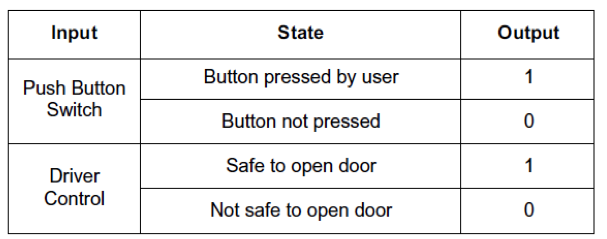
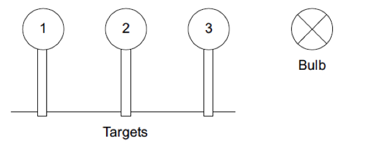
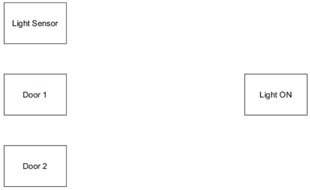
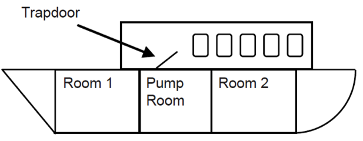
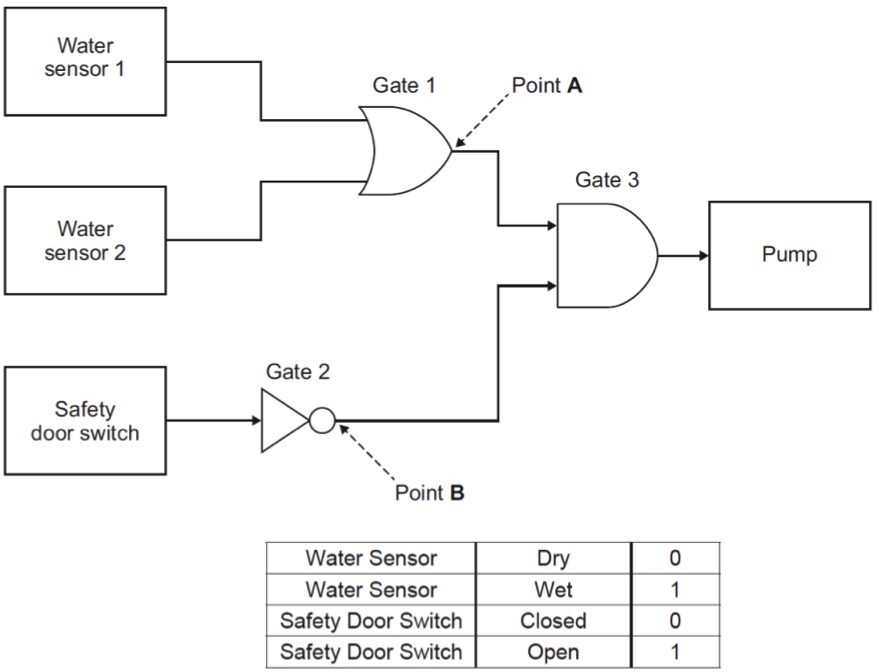
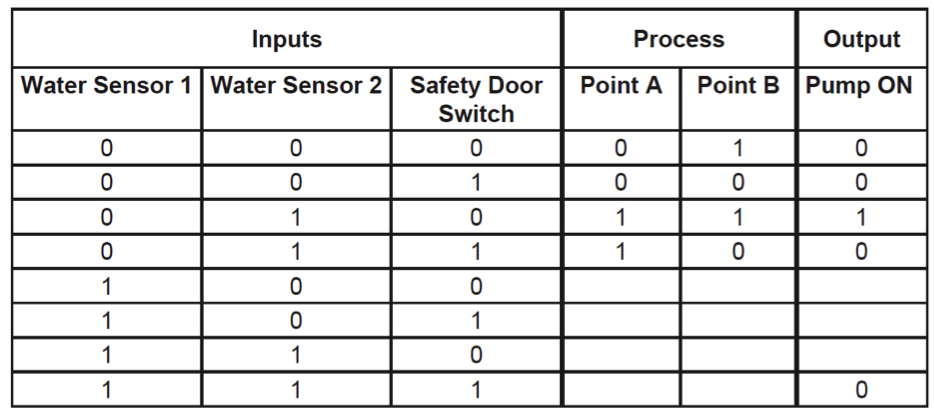

Logic Gates
Table of Contents

1 Introduction
- Whether programming a PIC chip or designing a circuit to use components, a good understanding of the basic logic gates will make your work easier. Electronic circuits, computers, games consoles and mobile ‘phones all use logic gates for their decision making processes.
- Logic gates typically operate using wither one or two inputs, which are either off (usually referred to as being “logic low” or 0), or on (referred to as being “high” or 1).
- In electronics, 5v usually indicates a logical high, and 0V for a logic low state.
- The AND gate only gives a logic high when both its inputs are high. i.e. Input 1 AND input 2 both need to be high.
- Some questions ask you to draw a truth table. This is a table which shows all the possible permutations of the inputs. A and B are used to denote inputs, and Q is the output value. In the first row here, we can see that when both the inputs are turned off (are low), the output is also low. The truth table for the AND gate is:
| A | B | Q |
|---|---|---|
| 0 | 0 | 0 |
| 0 | 1 | 0 |
| 1 | 0 | 0 |
| 1 | 1 | 1 |
- The OR gate gives a logic high when either (or both) of its inputs are high. i.e. Input 1 OR input 2 OR both are high.
| A | B | Q |
|---|---|---|
| 0 | 0 | 0 |
| 0 | 1 | 1 |
| 1 | 0 | 1 |
| 1 | 1 | 1 |
- The NOT gate is unique in having only one input. Sometimes called the invertor gate, it inverts whatever input is sent into it.
| A | Q |
|---|---|
| 0 | 1 |
| 1 | 0 |
2 Recap
Past Paper Questions
- Q2, June 2007. This question is about using logic gates to control a train door.
- (i) Complete the following by naming the logic gates shown and drawing the symbol where appropriate.

- (ii) Complete the truth tables for the three logic gates.
- It has been decided to operate a train door using push button switches. In this system, three push button switches operate the system (inside/ outside/ driver control).
- The door is opened by passengers pressing a push button switch next to the door. The door opening device operates and the door opens. The door should open when push button switch 1 or push button switch 2 is pressed and the driver operates a control.

- Construct a logic circuit to open the door using two 2-input logic gates to complete the logic circuit. Marks will be awarded for:
- Logic gate symbols (2 marks)
- Inputs to gates (4 marks)
- Output to door (1 mark)
- Neatness. (2 marks)
- June 2008, Q5. This question is about logic and operating a moving target. A stall holder gives a prize if the customer knocks down all three targets.

- In this system:
- 3 push switches operate the system,
- There is a push switch attached to each target,
- The bulb should only come ON when all three targets are knocked down.

- (a) Using two logic gates, construct a circuit in the space below to join the three push switches to the bulb. Each logic gate should have two inputs. Marks will be awarded for:
- logic gates symbols (2 marks)
- inputs to gates (4 marks)
- output to bulb (1 mark)
- quality of drawing. (1 mark)

- (b) Design a system to stand the target back up automatically when the operator resets the game. Draw a mechanical or pneumatic system in Space B that will stand the target back up. The system will need to allow the target to fall when hit.

- The side view of only one target is shown above, which is in the down position the target will remain upright against the stop some of the detail of the target has been omitted for clarity.
- Marks will be awarded for:
- a system able to lift the target to the vertical (3 marks)
- a system able to allow the target to fall when hit (3 marks)
- a suitable mounting of the system (1 mark)
- the quality of notes describing the operation. (4 marks)
- June 2011, Q1d. The cabin light in a car should only come ON when both of the following occur:
- either car door opens
- it is dark
- Using only logic gates, design a logic circuit that will operate the interior light correctly. Marks will be awarded for:
- logic gates symbols (3 marks)
- inputs to gates (5 marks)
- output to light (1 mark)
- neatness. (1 mark)

- June 2013, Q5. You are advised to spend about 15 minutes on this question. This question is about a system that automatically turns on a boat’s pump. The diagram below shows a boat with a pump room and two other rooms.

- If water is present in either Room 1 or Room 2, and the trapdoor to the pump room is closed, the pump automatically starts working. The diagram here shows the logic for the boat pump system.

- (a) Name the gates in the logic diagram.
- Gate 1:
- Gate 2:
- Gate 3: (3 marks)
- (b) If water is present in either Room 1 or Room 2 and the trapdoor to the pump room is closed, the pump automatically starts working. Complete the following truth table for the logic circuit shown above. (4 marks)

- (c) Use notes and sketches to show a suitable sensor for sensing that water is present in a room. (4 marks)
- (d) Suggest two advantages of using a Microcontroller (PIC) rather than discrete Logic Integrated Circuits (ICs) in an electronic product.
- Advantage 1:
- Advantage 2: (4 marks)